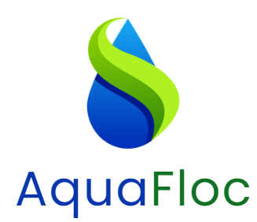
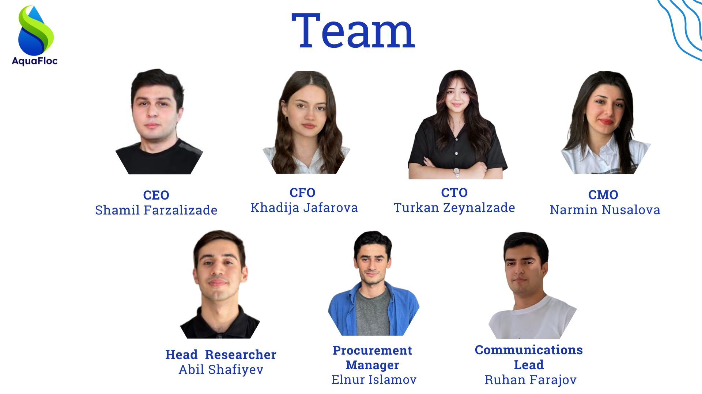

Bringing quality to treatment
We provide non-toxic and biodegradable flocculants for companies to achieve better results in flocculation.
Established in 2024, we are driving innovation to environment conservation.
Chemical Agents for Wastewater Treatment: AquaFloc develops specialized chemical agents to treat wastewater, focusing on industries like petrochemicals, textiles, and manufacturing. These agents enhance the breakdown of contaminants, ensuring cleaner effluents.
Enhanced Performance: The startup emphasizes both efficiency and sustainability, offering chemical treatments that are highly effective in removing pollutants while being environmentally friendly and preventing secondary pollution.

Phone: +994516183025
Location: Baku, Azerbaijan
Instagram: https://www.instagram.com/aqua.floc/
Message to CEO's LinkedIn: https://www.linkedin.com/in/shamil-farzalizade/